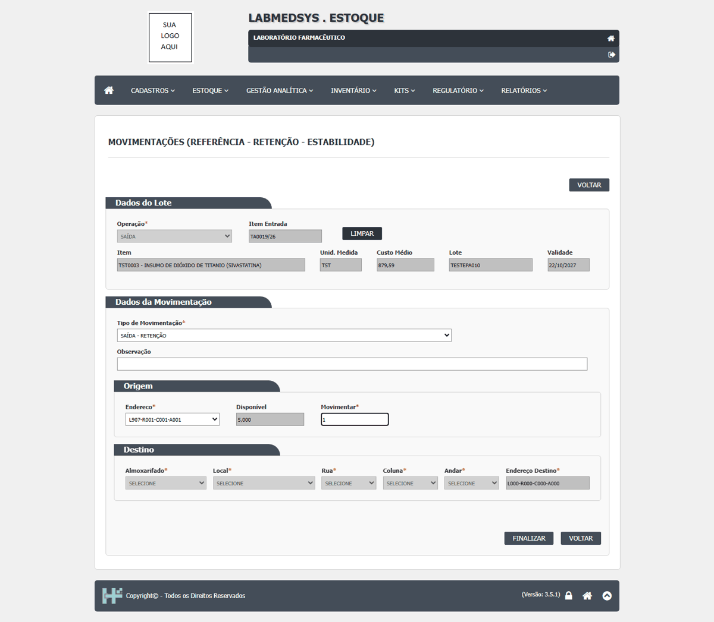
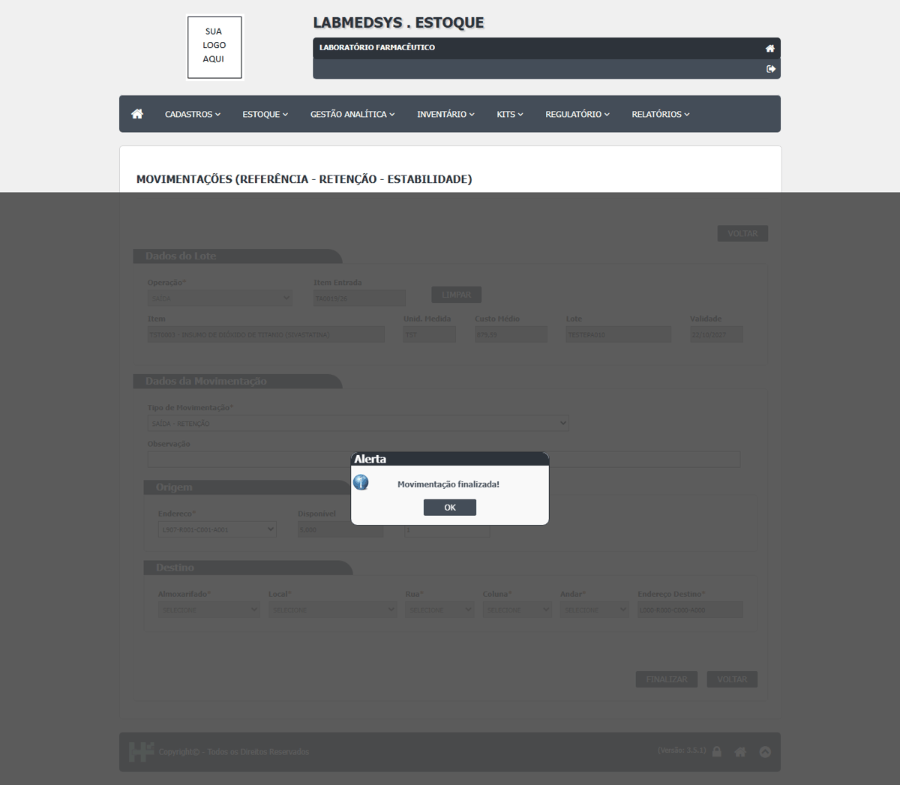
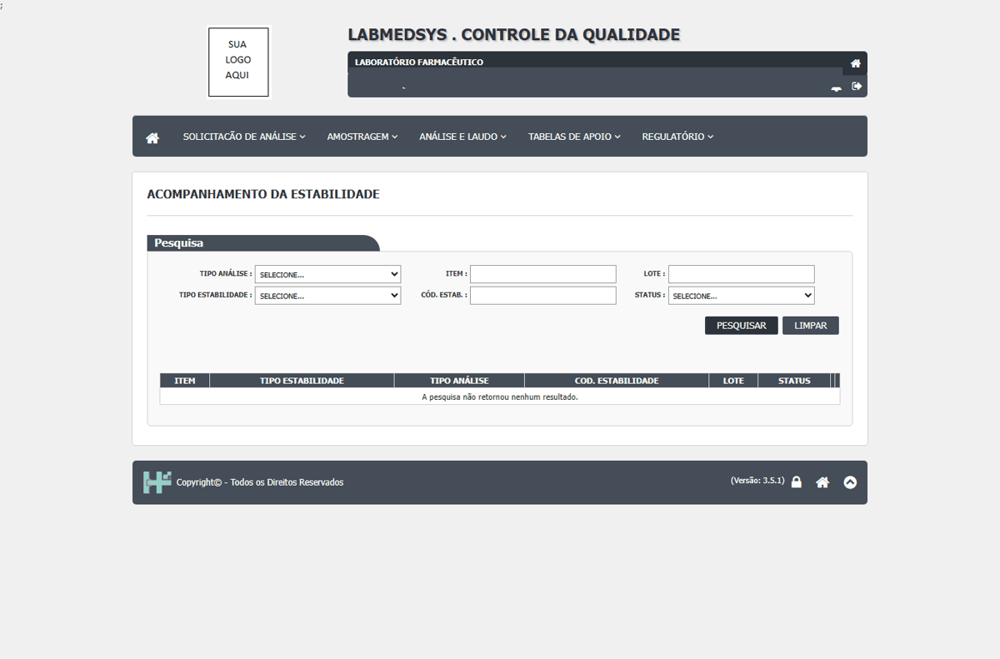
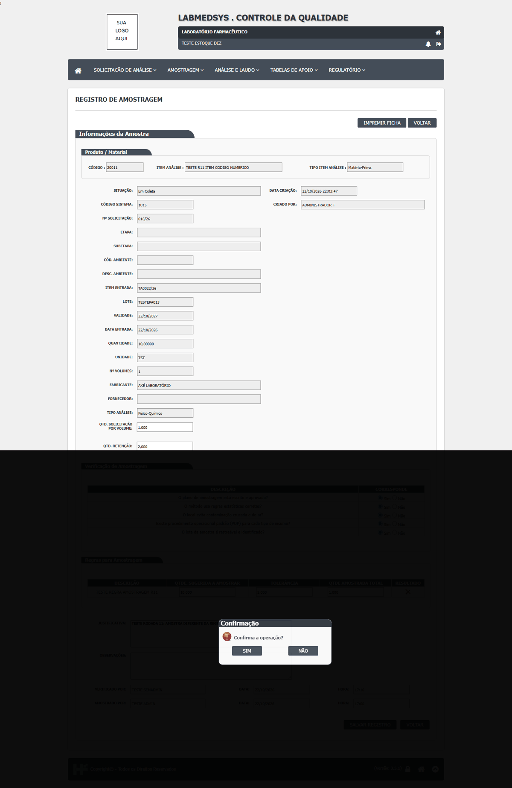
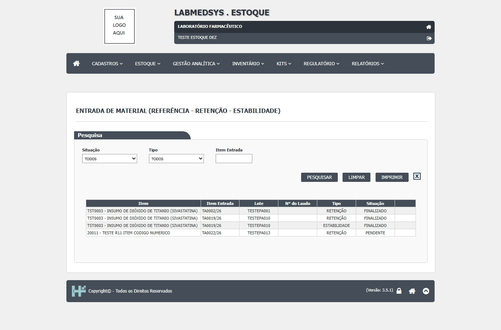
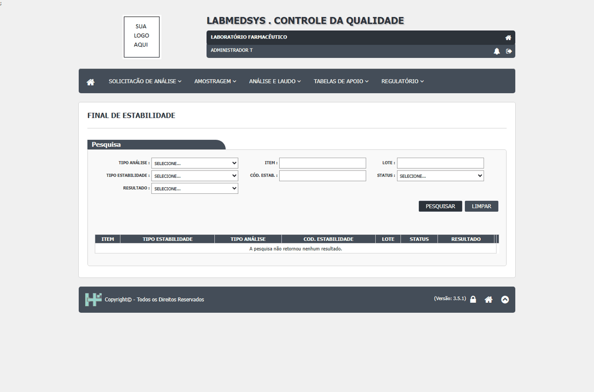
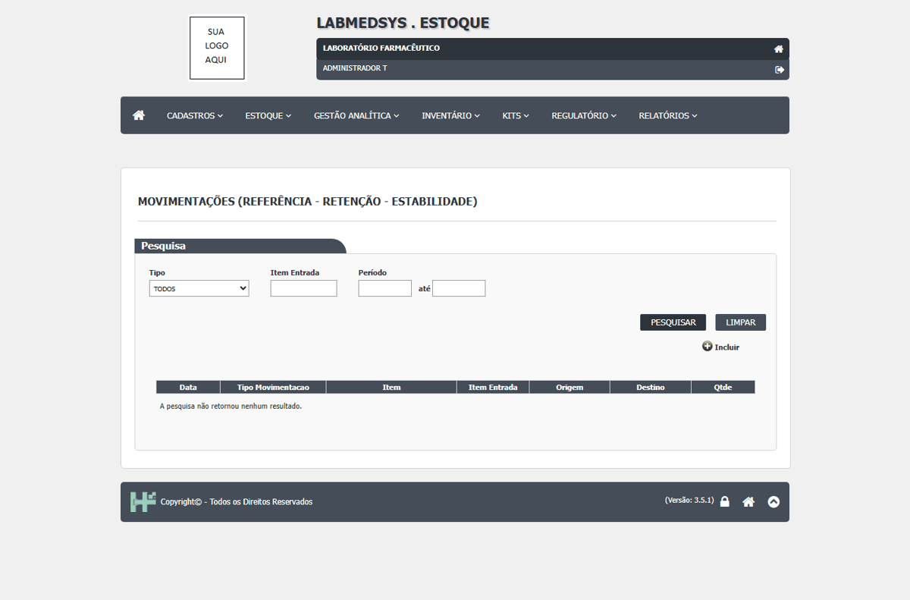
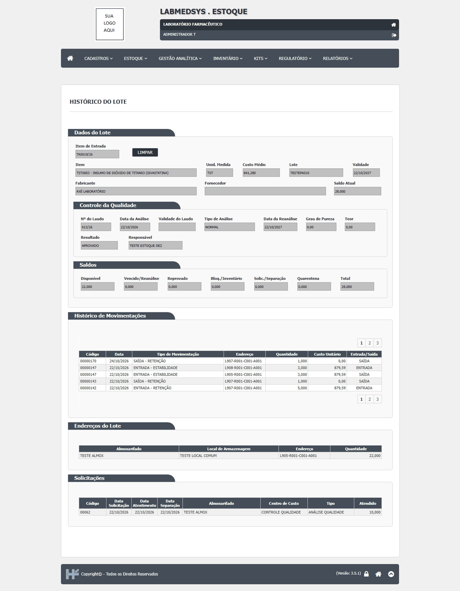

DV-EST-047 · A amostra de retenção gravada pela Entrada não aparece na Consulta de Disponibilidade nem na Saída
A **Entrada - Retenção** de 5 unidades do `TESTEPA001` gravou certo: a Consulta de Endereço mostra as 5 unidades em `L907-R901-C901-A901` (local `907 - TESTE LOCAL RETENCAO`, almoxarifado `TESTE RETENCAO`, tipo Retenção) e o disponível do lote caiu de 82 para 77. Mas a **Consulta Disponibilidade (Referência - Retenção - Estabilidade)** não lista nada, nem filtrando pelo item, e a **Saída - Retenção** do mesmo lote não oferece **nenhum endereço de origem**. A amostra existe no estoque e o controle regulatório não a enxerga: não dá para localizar, consultar nem dar saída numa amostra de retenção pela tela. Por isso o CT-EST-176 (saída antes do vencimento, que a norma manda impedir) nem pôde ser feito.
Como reproduzir o erro, passo a passo
- Preparar um almoxarifado do tipo Retenção, ligado ao grupo do usuário, com um local e um endereço (nenhum existia no ambiente).
- Regulatório › Movimentações, tipo "ENTRADA - RETENÇÃO": item TST0003, lote TA0002/26, 5 unidades, destino L907-R901-C901-A901. Finalizar.
- Abrir Consulta Disponibilidade (Referência - Retenção - Estabilidade) e filtrar por TST0003.
- Abrir Movimentações, tipo "SAÍDA - RETENÇÃO", mesmo item e lote, e abrir a lista de endereço de origem.
Esperado
A consulta mostra 5 unidades em retenção; a saída oferece o endereço L907-R901-C901-A901.
Obtido
Consulta vazia; lista de origem só com "SELECIONE".
Sem captura de tela registrada para este defeito.
DV-EST-068 · A Saída da amostra de retenção, antes do vencimento do lote, é aceita sem aviso, sem impedimento e sem justificativa
Com um lote que ainda tem cerca de um ano de validade (`TESTEPA010`, validade 22/10/2027) e 5 unidades de amostra de retenção no endereço `L907-R001-C001-A001`, a tela **Movimentações**, operação **Saída**, tipo **Saída - Retenção**, aceitou a retirada de 1 unidade: perguntou "Deseja finalizar a movimentação?" e respondeu **"Movimentação finalizada!"**. Não houve aviso de que o lote ainda não venceu, nem impedimento, nem pedido de justificativa (o campo Observação é opcional e ficou em branco), nem confirmação de outra pessoa. A saída aparece no Histórico do Lote como `SAÍDA - RETENÇÃO` de 1,000, sem usuário e com custo 0,00, e a Consulta Disponibilidade passou de 10 para 9 de retenção.
Como reproduzir o erro, passo a passo
- No cadastro de Item, marcar Retenção em um item com controle de qualidade (aqui o TST0003).
- Fazer entrar um lote desse item, aprová-lo no CQ e, na tela Movimentações, fazer a Entrada - Retenção de algumas unidades.
- Em Movimentações, escolher Saída, o item de entrada TA0019/26, tipo Saída - Retenção, origem L907-R001-C001-A001, quantidade 1, e Finalizar.
Esperado
Pela norma, impedir a saída da amostra de retenção antes do fim do prazo de guarda, ou ao menos alertar e exigir justificativa e autorização.
Obtido
Aceita e finalizada sem aviso.
Evidência (captura da tela)


DV-EST-071 · A Entrada de amostra de estabilidade não pede o tipo de estabilidade e não abre o acompanhamento de estabilidade no CQ
**Correção da rodada 11 (22/10/2026):** este defeito descreve a tela **Movimentações** (entrada manual). A tela que pede o tipo de estabilidade ("É necessário informar um tipo de estabilidade!") é a **Entrada de Material** do Regulatório, e nela só chegam entradas pendentes que nenhum caminho cria (DV-EST-074). O que está descrito abaixo continua verdadeiro para a entrada manual. Com o item `TST0003` marcado como **Estabilidade** e o local `908 TESTE LOCAL ESTABILIDADE` pronto, a tela **Movimentações**, operação **Entrada**, tipo **Entrada - Estabilidade** aceitou 3 unidades do lote `TESTEPA010` sem pedir nenhum tipo de estabilidade: **a tela não tem esse campo** (os tipos de estabilidade, Acelerada, Longa duração, Acompanhamento e Prateleira, existem só no CQ). A resposta foi "Deseja finalizar a movimentação?" e "Movimentação finalizada!". Depois disso, o **Acompanhamento Estabilidade** do CQ continua vazio ("A pesquisa não retornou nenhum resultado."), ou seja, a entrada não abriu estudo nenhum. O plano esperava a recusa "É necessário informar um tipo de estabilidade!" e a abertura do acompanhamento.
Como reproduzir o erro, passo a passo
- Marcar Estabilidade no cadastro do item (TST0003) e ter um local no almoxarifado TESTE ESTABILIDADE.
- Em Movimentações, Entrada, item de entrada TA0019/26, tipo Entrada - Estabilidade, origem L905-R001-C001-A001, quantidade 3, destino L908-R001-C001-A001, Finalizar.
- Abrir, no CQ, Regulatório › Acompanhamento Estabilidade e pesquisar.
Esperado
Pedir o tipo de estabilidade e abrir o acompanhamento no CQ.
Obtido
Aceita sem tipo; nada aparece no CQ.
Evidência (captura da tela)

DV-EST-074 · Nenhuma entrada de estabilidade pendente nasce: o campo "Qtd. Estabilidade" do Registro de Amostragem do CQ está desligado no código, e a entrada manual não abre o acompanhamento
A abertura do acompanhamento de estabilidade no CQ só é chamada pela tela **Entrada de Material** do Regulatório, quando se finaliza uma entrada **pendente do tipo Estabilidade** (essa tela é a que pede o tipo de estabilidade: "É necessário informar um tipo de estabilidade!"). Essa entrada pendente nasce da quantidade de estabilidade informada na amostragem do CQ, mas **o campo "Qtd. Estabilidade" do Registro de Amostragem não aparece**: no código ele está dentro de um bloco comentado; a tela mostra só Qtd. Retenção e, para itens de referência, Qtd. Referência. Resultado: com um item marcado como Estabilidade e a Regra de Estabilidade criada, o ciclo completo do CQ de um lote novo (item 20011, lote `TESTEPA013`) gerou **uma entrada pendente de Retenção** (finalizada normalmente) e **nenhuma de Estabilidade**. A entrada manual para o almoxarifado de estabilidade pela tela **Movimentações** funciona ("Movimentação finalizada!"), mas **não abre acompanhamento**: o Acompanhamento Estabilidade do CQ continua vazio ("A pesquisa não retornou nenhum resultado.").
Como reproduzir o erro, passo a passo
- Item com Controle de Qualidade, Retenção e Estabilidade marcados e Regra de Estabilidade criada para ele (ver DV-EST-075 para o caminho possível).
- Dar entrada do lote e fazer o ciclo do CQ: programar e registrar a amostragem (a tela só tem Qtd. Retenção), digitar o resultado, aprovar, emitir o laudo, Atualizar resultado no Estoque e fazer a Movimentação de Quarentena.
- Abrir Regulatório › Entrada de Material: só aparece a entrada de Retenção.
- Em Movimentações, fazer a Entrada - Estabilidade do lote e abrir o Acompanhamento Estabilidade no CQ.
Esperado
A amostragem permite informar a quantidade de estabilidade; a entrada pendente de estabilidade pede o tipo e abre o acompanhamento no CQ.
Obtido
Sem campo na amostragem; só nasce entrada de retenção; a entrada manual de estabilidade não abre acompanhamento.
Evidência (captura da tela)




DV-EST-124 · A lista de Movimentações do Regulatório vem sempre vazia, mesmo depois de entradas e saídas de amostra feitas no mesmo dia
A lista de Movimentações responde "A pesquisa não retornou nenhum resultado." com qualquer filtro: sem filtro, tipo Retenção, item de entrada `TA0019/26`, período de 01 a 31/10/2026 e só o dia de hoje. Isso inclui a saída de retenção que acabei de finalizar ("Movimentação finalizada!") e as entradas e saídas das rodadas 10 e 11. A pessoa não tem como ver, nesta tela, o que já foi movimentado.
Como reproduzir o erro, passo a passo
- Fazer uma Saída - Retenção do lote TESTEPA010 e finalizar.
- Voltar à lista de Regulatório › Movimentações e pesquisar sem filtro, depois por tipo, item e período.
Esperado
A lista mostra as movimentações feitas, com data, tipo, item, origem, destino e quantidade.
Obtido
Sempre vazia.
Evidência (captura da tela)

DV-EST-125 · A Observação digitada na movimentação de amostra não aparece em lugar nenhum
Na Saída - Retenção do lote `TESTEPA010`, o campo Observação foi preenchido com `TESTE descarte antes do prazo` e a movimentação finalizada. O texto não aparece no Histórico do Lote (que não tem coluna de observação) nem na lista de Movimentações (vazia, DV-EST-124). O motivo de descartar uma amostra antes do prazo, o único campo para dizer isso, fica sem destino.
Como reproduzir o erro, passo a passo
- Fazer a Saída - Retenção com Observação preenchida.
- Procurar o texto no Histórico do Lote e na lista de Movimentações.
Esperado
O texto digitado fica gravado e visível.
Obtido
Não aparece.
Evidência (captura da tela)
